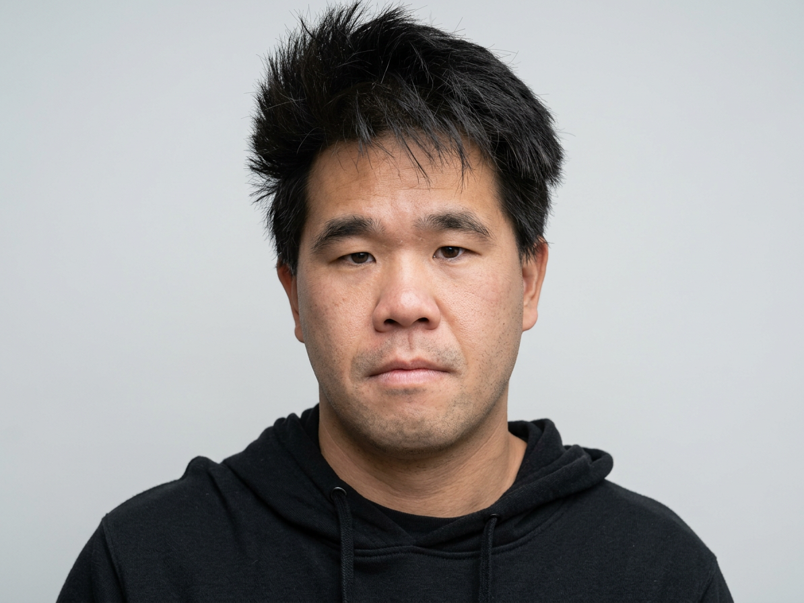

i am currently livening in California in the south bay area my first introduction in to the graphic design when i was in high school in my sophomore year in high school and in conjunction to fine arts after graduating high school i went on to study at local community
collage DeAnza collage took a lot of art design photography course after obtaining certificate of design and photography i went through a lot of paid and unpaid workshops and trying to reinforce for i have learn in those workshop and apply it trough my personal work i don't hold a bachelors of fine art but i get a really good sense what good design is